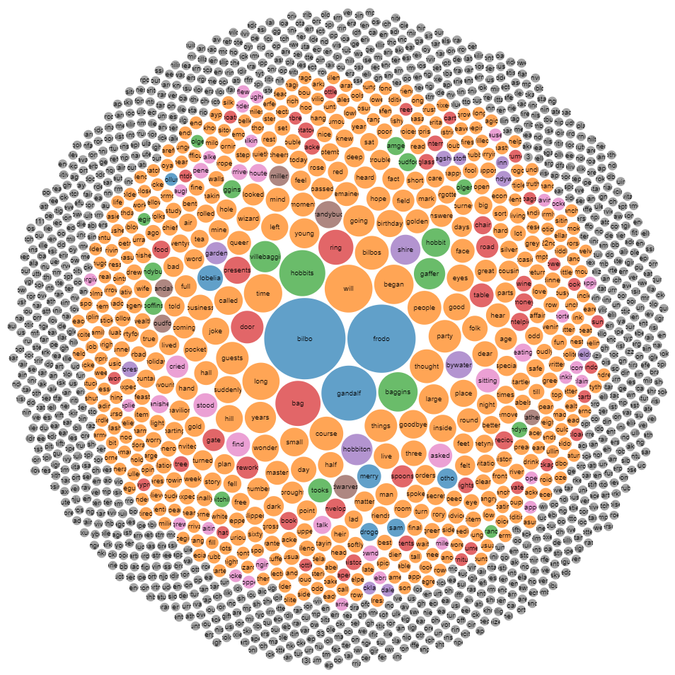

Lord of the Rings frequency chart.
This image shows the frequency of words found in the first chapter of Tolkien's LOTR
Details
CISC 3130
Alanis Gomez
This website was created for a homework assignment.
See Chart

See Words